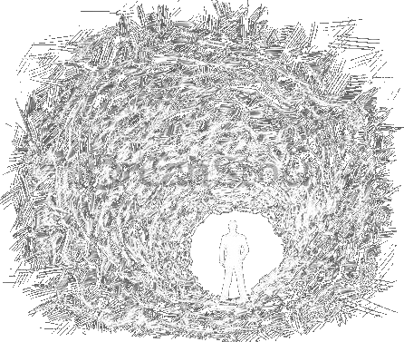

Synthstatic
Skywave
2004 • 14 songs • 47:31
Genres: Shoegaze, Noise Pop
Post-Punk, Noise Rock
With every track, Skywave ends up creating a completely unique athmosphere, laying the strength and focus on different parts. Whether it's the glittering guitars or the extreme repetition, this record is certainly one of diversity.
This album is noisy, dense, existential and lonely.